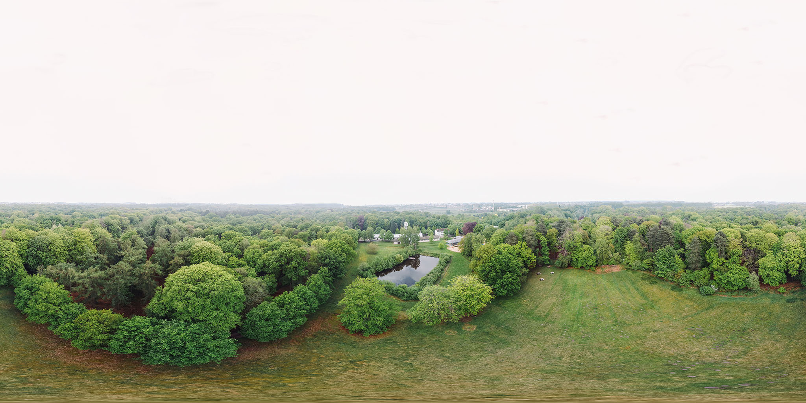
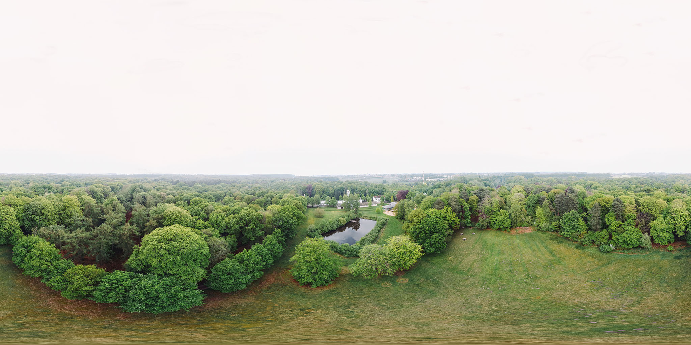
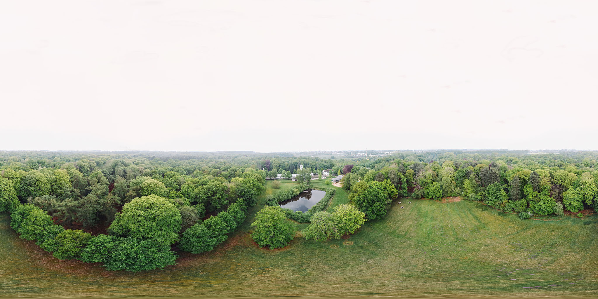

WARNING: Experimental. This is a preliminary API and is likely to change.
Currently requires Chrome Canary 88.0.4313.2 or newer, and needs "WebXR Incubations" enabled in chrome://flags.
To test tracking, print this images, or display it on a separate device: Earth,
